Clutch component disassembly/assembly
1. Perform the preinspection before disassembly. (See Clutch Component Preinspection.)
2. Disassemble in the order indicated in the table.
3. Assemble in the reverse order of disassembly.
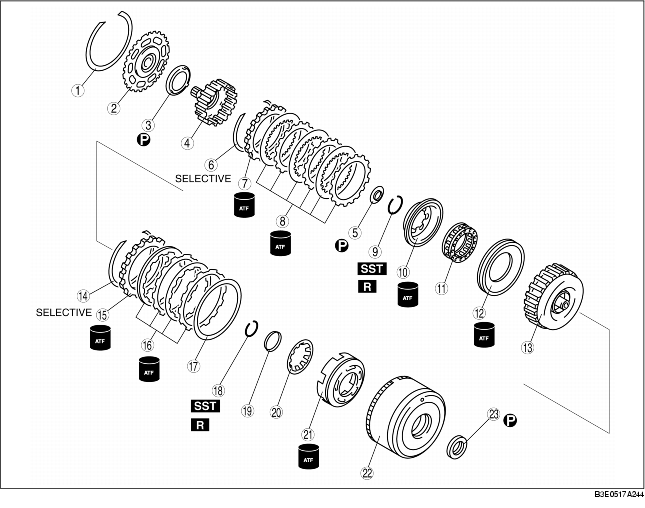
.
Snap Ring (3-4 clutch) Disassembly Note
1. Install the SST as shown.
- • Depress the seal plate only enough to remove the snap ring. Overpressing will damage the seal plate assembly edges.
2. Compress the seal plate.
3. Remove the snap ring.
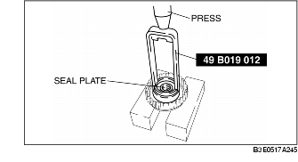
4. Remove the SST, then remove the seal plate and spring and retainer component.
3-4 Clutch Piston Disassembly Note
1. Set the 3-4 clutch drum onto the end cover.
2. Remove the 3-4 clutch piston from the 3-4 clutch drum by applying compressed air through the fluid passage.
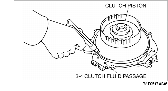
Air pressure
Snap Ring (Reverse clutch) Disassembly Note
1. Install the SSTs as shown.
- • Depress the piston return spring only enough to remove the snap ring. Overpressing will damage the piston return spring assembly edges.
2. Compress the piston return spring.
3. Remove the snap ring.
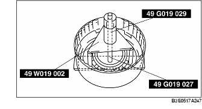
4. Remove the SSTs, then remove the reverse return stopper and return spring.
Reverse Piston Disassembly Note
1. Set the 2-4 brake drum onto the end cover.
2. Remove the reverse piston from the 2-4 brake drum by applying compressed air through the fluid passage.
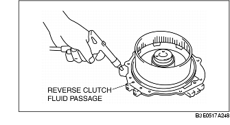
Air pressure
Assembly Procedure
1. Measure the facing thickness in three places and calculate the average value.
Drive plate part number: FN11 19 370 Drive plate part number: FNE1 19 3702. Measure the free length of the spring and inspect for deformation.

Spring free length
3. Verify that there is airflow when applying compressed air through the fluid passage of 3-4 clutch drum.
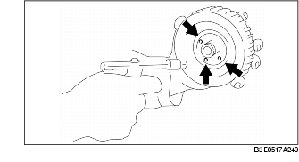
Air pressure
4. Replace the 3-4 clutch drum if damaged or malfunctioning.
5. Verify that there is airflow when applying compressed air through the fluid passage of 2-4 brake drum.
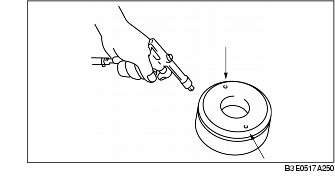
Air pressure
6. Replace the 2-4 brake drum if damaged or malfunctioning.
7. Measure the bushing of the rear sun gear.
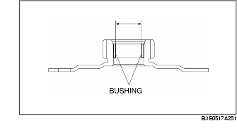
Bushing inner diameter
8. Install the reverse clutch.
- • Installing the reverse clutch piston may damage its seal. Carefully install the reverse clutch piston by pushing evenly around the circumference.
- (1) Apply ATF to the circumference of the reverse clutch piston seal, and install the piston into the 2-4 brake drum.
-
(2) Install the piston return spring and reverse return stopper to the reverse piston.
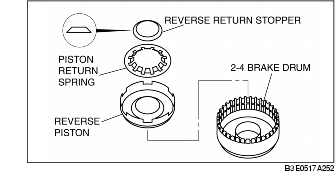
-
(3) Install the snap ring and the SSTs to the 2-4 brake drum as shown.

- • Depress the piston return spring only enough to install the snap ring. Overpressing will damage the piston return spring assembly edges.
- (4) Compress the piston return spring.
- (5) Install the snap ring.
- (6) Remove the SSTs.
- (7) Install the dish plate.
- (8) Install the drive and driven plates in the following order. Driven-Drive-Driven-Drive
-
(9) Install the retaining plate.
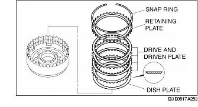
9. Measure the reverse clutch clearance.
- (1) Install the reverse clutch into the end cover, and set the dial gauge.
-
(2) Secure the reverse clutch by lightly pressing down with a press or similar tool.

-
(3) Apply compressed air to the part indicated in the figure and let the reverse clutch piston stroke three times.

Air pressure
- (4) Apply compressed air and operate the reverse clutch piston. Read the value when the indicator of the dial gauge stops.
- (5) Release the compressed air and read the dial gauge when the reverse clutch piston is not operating.
- (6) Calculate the reverse clutch clearance according to the following formula: step (4) value - step (5) value = Reverse clutch clearance.
-
(7) Measure the clearances at four locations (90° apart) by following the steps from (3) to (6). Verify that the average value is within the specification below.
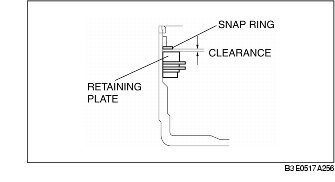
Reverse clutch clearance
- (8) Add the thickness to the average value calculated in step (7), and select the snap ring whose range includes the value.
- (9) Install the selected snap ring and perform steps (2) to (7) again. Verify that the calculated value satisfies the clearance specification.
Snap ring sizes
10. Inspect the reverse clutch operation.
- (1) Install the 2-4 brake drum to the end cover.
-
(2) Inspect the reverse clutch operation by applying compressed air as shown.

Air pressure
11. Install the 3-4 clutch.
- • Installing the 3-4 clutch piston may damage its seal. Carefully install the 3-4 clutch piston by pushing evenly around the circumference.
- (1) Apply ATF to the circumference of the 3-4 clutch piston seal, and install the piston in to the 3-4 clutch drum.
- (2) Install the spring and retainer.
-
(3) Apply ATF to the 3-4 seal plate, and install it onto the 3-4 clutch drum.
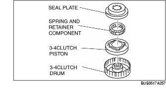
-
(4) Install the SST as shown.
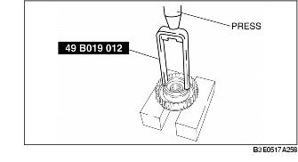
- • Depress the 3-4 seal plate only enough to install the snap ring. Overpressing will damage the 3-4 seal plate assembly edges.
- (5) Compress the spring and retainer component and 3-4 seal plate.
- (6) Install the snap ring.
- (7) Remove the SST.
- (8) Install the drive and driven plates in the following order. Driven-Drive-Driven-Drive-Driven-Drive
- (9) Install the retaining plate.
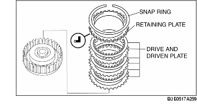
DRIVE PLATE PART NUMBER: FNE1 19 370
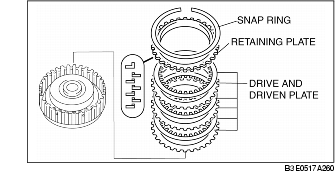
12. Measure the 3-4 clutch clearance.
- (1) Install the 3-4 clutch in the end cover, and set the dial gauge.
-
(2) Secure the 3-4 clutch by lightly pressing down with a press or similar tool.

-
(3) Apply compressed air to the part indicated in the figure and let the 3-4 clutch piston stroke three times.

Air pressure
- (4) Apply compressed air and operate the 3-4 clutch piston. Read the value when the indicator of the dial gauge stops.
- (5) Release the compressed air and read the dial gauge when the 3-4 clutch piston is not operating.
- (6) Calculate the 3-4 clutch clearance according to the following formula: step (4) value - step (5) value = 3-4 clutch clearance.
-
(7) Measure the clearances at four locations (90° apart) by following the steps from (3) to (6). Verify that the average value is within the specification below.

3-4 clutch clearance
- Drive plate part number : FN11 19 370
- 1.00-1.30 mm {0.039-0.051 in}
- Drive plate part number : FNE1 19 370
- 1.10-1.40 mm {0.043-0.055 in}
- (8) Add the thickness to the average value calculated in step (7), and select the snap ring whose range includes the value.
- (9) Install the selected snap ring and perform steps (2) to (7) again. Verify that the calculated value satisfies the clearance specification.
Snap ring sizes
13. Inspect the 3-4 clutch operation.
- (1) Install the 3-4 clutch drum to the end cover.
-
(2) Inspect the 3-4 clutch operation by applying compressed air as shown.

Air pressure
14. Install the 3-4 clutch component to the 2-4 brake drum.
15. Apply petroleum jelly to the bearing, and secure it onto the 3-4 clutch component.
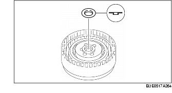
16. Install the 3-4 clutch hub.
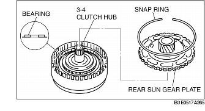
17. Apply petroleum jelly to the bearing, and secure it onto the 3-4 clutch hub as shown in the figure.
18. Install the rear sun gear plate onto the 2-4 brake drum.
19. Install the snap ring.